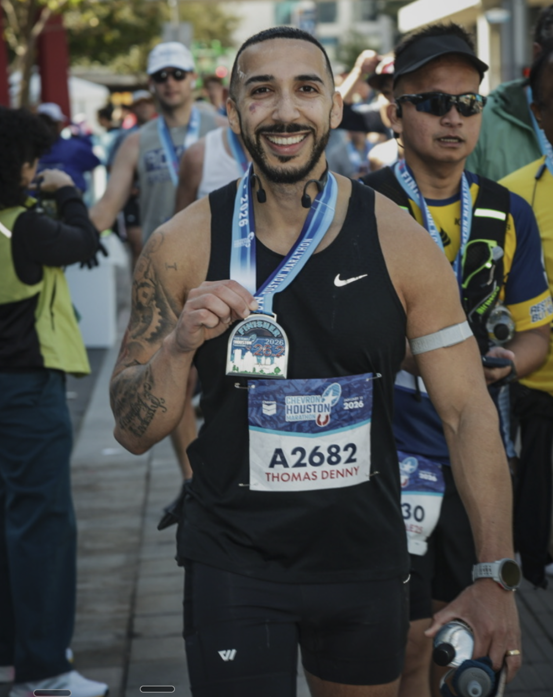

Running Through Doubt — The 2026 Houston Marathon

8 days ago I crossed the finish line of the 2026 Houston Marathon with a time of 3:59:51 — just 9 seconds under 4 hours. That's 16 minutes slower than my first marathon of 3:43 back in February 2024, but the lead-up to this race taught me more about character, integrity, and friendship than an arbitrary time on a clock.
A few things got cemented on those 26.2 miles.
Finishing well reveals your character when the plan falls apart.
The training was rough. Life got in the way. Injuries piled up. Thirteen weeks into my 19-week plan, I was coming off a half marathon, a Hyrox race, and a 20-mile long run — all in a 3-week span. Then burnout hit. I didn't recover properly and wound up with an adductor injury that left me limping and unable to run for the final 5 weeks before race day. I showed up to the starting line full of doubt. The longest I'd run in the last month was 4 miles.
The first 17 miles felt smooth — I was riding high. Then at mile 18, my right quad seized up and forced me to stop. I had a choice: quit the race or keep going. I ran/walked the last 8 miles, wincing in pain but refusing to stop.
Crossing that finish line hurt like hell, but the pride I felt was something only earned by pushing past what I thought I could handle.
Reframing in real-time is invaluable.
Things don't always go your way. That's fine. What matters is how quickly you can find new meaning. What's the alternative — wallow in what could have been? I think you cheat yourself of invaluable wisdom if you stop short because circumstances aren't perfect.
There's a lesson in everything if you're willing to look for it, especially when your initial aim is no longer feasible. The goal becomes adaptability and redefining success.
Shared hardship creates an undeniable bond.
I wouldn't have finished without my friend, running buddy, and future business partner, Alvaro. Unlike my first marathon, this prep was done together. We logged hundreds of miles and hours of conversation. When I was doubting myself and ready to bail, he kept things in perspective. I even floated the idea of skipping the race entirely. He didn't bite. I'm glad he didn't.
Watching him pass me and crush the marathon with a 3:43 — the exact time of my first race — filled me with pride. Coincidence? Maybe. But it felt right. And well deserved.
The way we showed up for each other during training — through the early mornings, the doubts, the setbacks — that's something I will always cherish. Thank you.
Moving forward.
The next challenge, whatever it is, won't be about proving I can hit a number. It'll be about showing up when it's hard, adapting when things break, and bringing people along who make the struggle worth it.
That's what Houston taught me. And that's what I'm carrying forward.